from dash import Dash, htmlIntro to Dash and HTML
This section introduces Dash, a Python framework from Plotly for building interactive, web-based dashboards without requiring traditional web development skills. Dash combines Plotly for visualizations, Flask for the backend, and React for the front end, making it ideal for analysts who want to turn Python code into shareable, browser-based applications. The lesson covers Dash’s two core modules — dash.html (for HTML structure) and dash.dcc (for interactive components) — and demonstrates how to create, run, and style a basic app. It explains the difference between static and dynamic content, showing how callbacks update dashboards in real time through APIs, databases, or live streams. Students learn how to build a simple “Hello Dash” app, add headings, paragraphs, and hyperlinks, and apply styling using inline Python dictionaries or external CSS stylesheets. Key design concepts such as borders, padding, margins, and hover effects are introduced to control layout and visual hierarchy.
Dash
Dash is a Python library for building interactive web applications. Developed by Plotly, Dash allows users to create dynamic, data-driven dashboards entirely in Python — no JavaScript, HTML knowledge, or web development background required. It is built on top of Plotly for visualizations, Flask for managing the web server, and React for the front-end interface.
Dash is designed for data analysts and data scientists with a basic knowledge of Python. It is ideal for creating visualizations and dashboards that can be easily shared with customers, executives, and other stakeholders — without needing to email static files or screenshots.
Every Dash app is built on two things:
dcc— Dash Core Components — interactive UI elements like dropdowns, sliders, date pickers, and graphs. These are what users interact with.html— Dash HTML Components — Python representations of standard HTML elements (headings, paragraphs, divs) used to structure and organize the page.
Interactivity is powered by callback functions, which automatically update output components when a user changes an input component.
Choosing a Visualization Tool
The right tool depends on your goal:
| Tool | Best for | Output |
|---|---|---|
| Matplotlib | Quick, static charts for reports or PDFs | Static image |
| Plotly | Interactive browser-based charts without a full app | Standalone chart |
| Dash | Full web apps with controls, dropdowns, and callbacks | Hosted application |
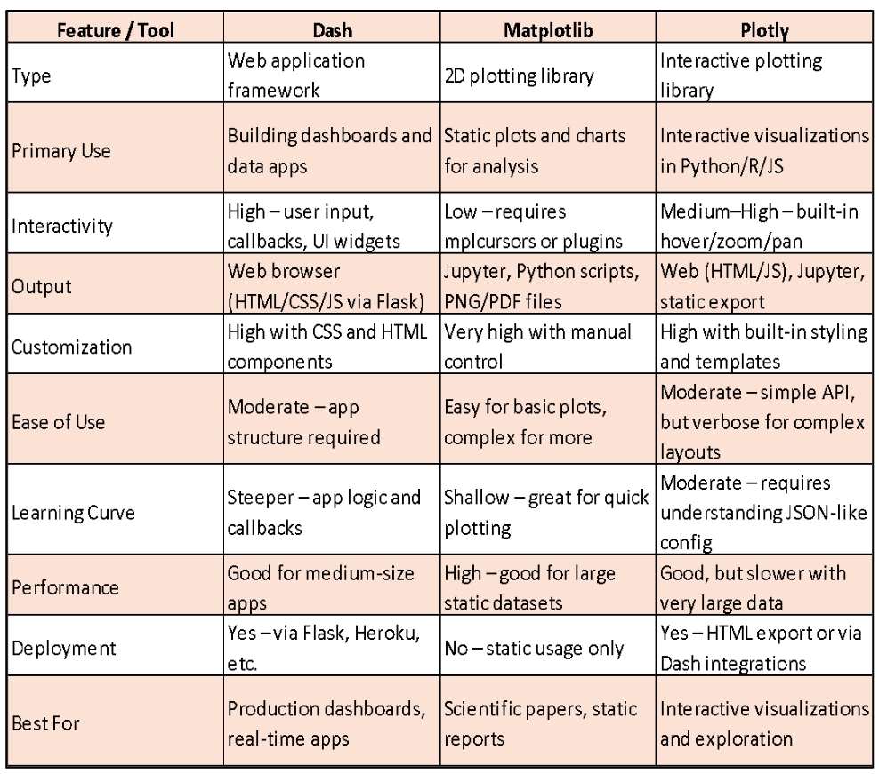
Static and Dynamic Content
Dash handles both static and dynamic content:
- Static content — files that do not change on the server side: images, PDFs, CSS, and JavaScript. These are served once and do not respond to user interaction.
- Dynamic content — data or components that update in response to user interaction, database queries, API calls, or real-time streaming. This is what makes Dash apps interactive.
Dynamic updates are powered by callbacks: Python functions decorated with @app.callback() that listen for changes in input components and push new values to output components. Data sources for dynamic content include:
- APIs — fetch fresh external data inside callback functions (e.g., weather, stock prices).
- Databases — query and return results dynamically based on user selections.
- Live data streams — real-time feeds using WebSocket integrations or periodic polling with
dcc.Interval.
Creating Your First Dashboard
Importing Dash
Dash is the main class used to initialize your web app. html provides access to HTML components like html.H1, html.P, and html.Div.
Initializing the App
Dash() creates a new web application instance. You store it in a variable named app by convention — most Dash documentation and examples use this name, making it easy to follow along.
app = Dash()Running the App
if __name__ == '__main__':
app.run(debug=True, use_reloader=False)if __name__ == '__main__'— ensures the server starts only when you run this file directly (not when it is imported by another module). This is a standard Python idiom.app.run()— starts the local development server.debug=True— enables hot reloading so you can see code changes in the browser without restarting the server.use_reloader=False— prevents the reloader from running a second process, which can cause issues in some Jupyter/VS Code environments.
My First Dashboard
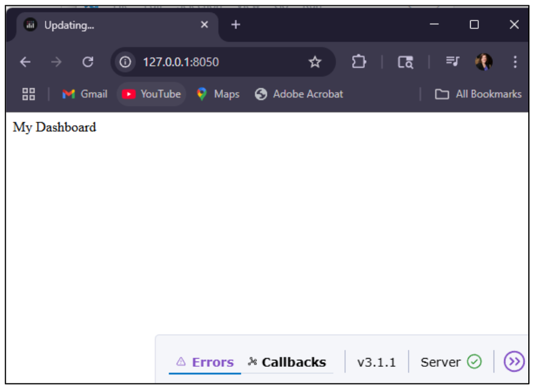
When you run the code, Dash starts a local development server. You will see a message in the terminal:
Dash is running on http://127.0.0.1:8050/
127.0.0.1 is the loopback address — it always refers to your own machine. Port 8050 is Dash’s default port. You can also access the app at http://localhost:8050/ — these two addresses are equivalent.
A debug menu will appear in the bottom-right corner of the browser while debug=True is set. Press Ctrl + C in the terminal to stop the server when you are done testing.
When deploying to production, set debug=False to hide the debug menu and improve security and performance. The debug menu is a development convenience — never leave it on in a live app.
Adjusting the Layout
Python functions from the dash.html module mirror standard HTML elements and are used to build the visual structure of your Dash app. app.layout defines everything the user will see.
from dash import Dash, html
app = Dash(__name__)
app.title = "My First Dash App" # sets the browser tab title
app.layout = html.Div([
html.H1("Hello Dash!"),
html.P("This is a simple dashboard.")
])
if __name__ == "__main__":
app.run(debug=True)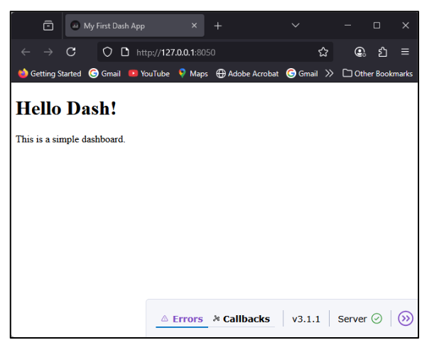
app.title sets the browser tab title — the text you see in the tab at the top of Chrome or Firefox. It corresponds to the HTML <title> tag. Note: this is different from html.H1, which is the visible heading inside the page.
Key layout components:
html.Div()— a container element (<div>tag) used to group and organize other components. Think of it as an invisible box.html.H1()— creates a large heading (<h1>tag). UseH2throughH6for progressively smaller headings.html.P()— creates a paragraph (<p>tag) for regular body text.
HTML Components Overview
Dash components are organized in a hierarchical tree — containers hold other components, which can themselves hold components. The two most commonly used modules are:
dash.html— Dash HTML Components for page structure.dash.dcc— Dash Core Components for interactivity (introduced when we cover callbacks).
HTML (HyperText Markup Language) is the standard markup language for structuring web pages. In Dash, you write HTML using Python functions rather than raw HTML tags — html.P("Hello") in Python is equivalent to <p>Hello</p> in HTML.
Common HTML elements available in dash.html:
| Python | HTML equivalent | Purpose |
|---|---|---|
html.H1("text") |
<h1>text</h1> |
Largest heading |
html.P("text") |
<p>text</p> |
Paragraph |
html.Div([...]) |
<div>...</div> |
Container/grouping |
html.Br() |
<br> |
Line break |
html.A("text", href="url") |
<a href="url">text</a> |
Hyperlink |
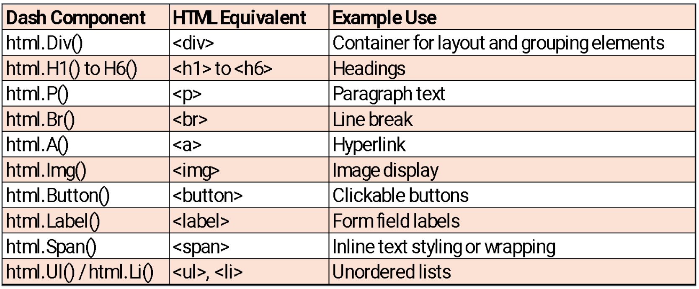
Adding a Line Break and a Hyperlink
html.Br()— inserts a line break, equivalent to<br>in HTML. It adds vertical spacing between elements without starting a new paragraph.html.A("Click here", href="https://example.com")— creates a clickable hyperlink. The first argument is the visible link text;hrefspecifies the destination URL.target="_blank"opens the link in a new tab.
app.layout = html.Div([
html.H1("Hello Dash!"),
html.P("This is a simple dashboard."),
html.Br(),
html.A("Click here", href="https://example.com", target="_blank")
])HTML Elements
In standard HTML, tags define the structure of a web page using the pattern <tagname>content</tagname>. In Dash, you use the dash.html module to create the same elements in Python — the two are directly equivalent:
HTML: <p>This is a paragraph</p>
Python: html.P("This is a paragraph")
HTML: <h1>This is a Heading</h1>
Python: html.H1("This is a Heading")from dash import html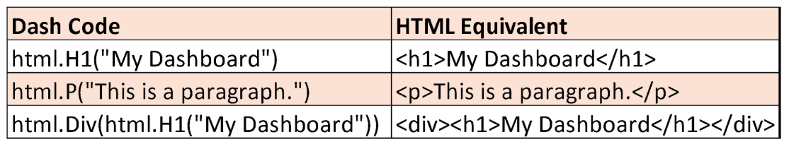
Styling in Dash
In Dash apps, the style parameter applies CSS styling directly to a component using a Python dictionary. The keys are CSS property names written in camelCase (e.g., fontSize instead of font-size), and the values are strings.
html.H1("Hello Dash", style={
'color': '#381D5C', # hex color code for text
'fontSize': '20px', # font size
'backgroundColor': '#E898AA' # background color behind the heading
})HTML color codes and hex values are available at htmlcolorcodes.com.
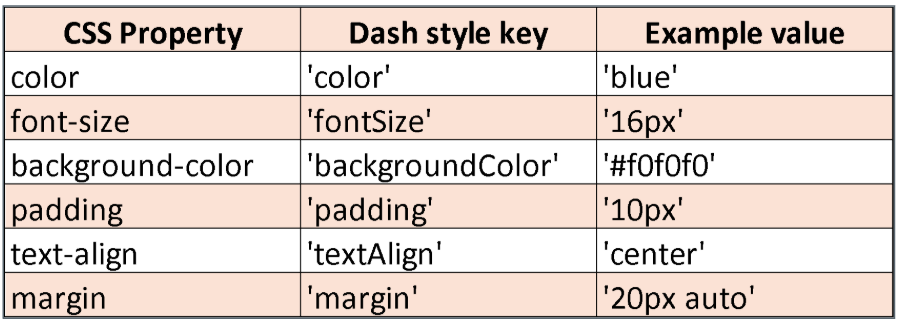
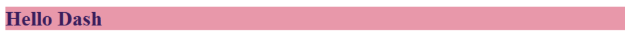
Borders
The style dictionary accepts the following border-related keys:
'border'— shorthand for all border properties at once:{'border': '1px solid black'}(width, style, color)'borderWidth'— sets the border thickness:{'borderWidth': '2px'}'borderStyle'— sets the line style:{'borderStyle': 'dotted'}(options:solid,dashed,dotted,double)'borderColor'— sets the border color:{'borderColor': 'gray'}'borderRadius'— rounds the corners:{'borderRadius': '10px'}(larger = rounder)
Padding
Padding is the space inside the element, between its content and its border — like the margin of a page inside the cover.
'padding'— sets equal padding on all four sides:{'padding': '15px'}'paddingTop','paddingBottom','paddingLeft','paddingRight'— control each side individually.
html.P("This is a simple dashboard.",
style={'border': '1px solid black',
'padding': '10px'}) # adds space between the text and the border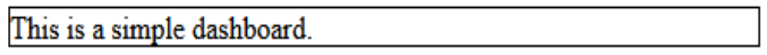
In Python, all key-value pairs in a dictionary must be separated by commas. Forgetting a comma between style properties is a common source of syntax errors.
Margin
Margin is the space outside the element, between its border and neighboring elements — like the white space between paragraphs on a page.
'margin'— sets equal margin on all four sides:{'margin': '20px'}'marginTop','marginBottom','marginLeft','marginRight'— control each side individually.{'marginLeft': 'auto', 'marginRight': 'auto'}— horizontally centers a block element within its parent container.
html.P("This is a simple dashboard.",
style={'border': '1px solid black',
'padding': '20px', # space inside (between text and border)
'margin': '50px'}) # space outside (between border and page edge)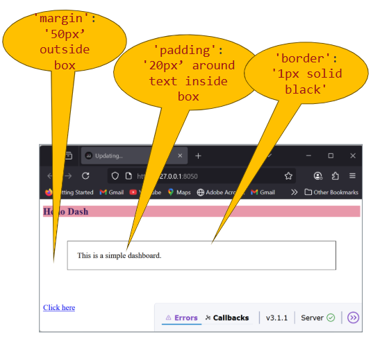
CSS in Dash: External Stylesheets
Inline style={} dictionaries are convenient for quick, component-specific adjustments. For consistent, app-wide styling, use an external CSS file in Dash’s assets/ folder.
If you create an assets/ folder in your working directory and place a .css file inside it, Dash automatically loads and applies it to the entire app — no extra configuration needed.
When to use each approach:
| Approach | Best for |
|---|---|
Inline style={} |
Small, one-off overrides on a single component |
External CSS in assets/ |
Consistent styling across the whole app or multiple pages |
Styling the Body
The CSS below sets global defaults for the entire page:
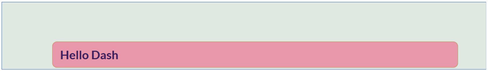
body, html {
padding: 40px; /* breathing room around all content */
background: #dfe9e1; /* light green-gray background */
color: #1f1e1e; /* dark text color */
font: 16px Arial, sans-serif; /* base font size and family */
}Changing the Paragraph Background Color
p {
background-color: #d4cece; /* applies to ALL <p> elements in the app */
}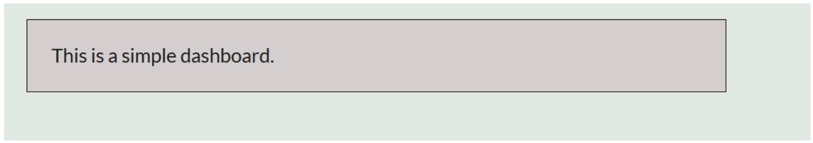
Styling the Hyperlink
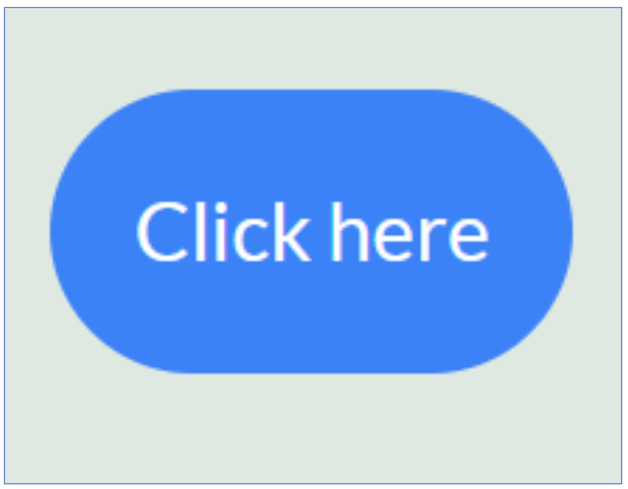
The CSS below transforms a plain underlined link into a styled pill-shaped button:
/* Rounded, colored hyperlink box */
a {
display: inline-block; /* allows padding and width to apply */
padding: 25px; /* space inside the button */
border-radius: 9999px; /* large value = pill/capsule shape */
background-color: #3b82f6; /* blue background */
color: #ffffff; /* white text */
text-decoration: none; /* removes the default underline */
font-size: 24px; /* larger text */
}CSS comments use the /* comment */ syntax. They are ignored by the browser and are useful for documenting your style choices.
Adding a Hover Effect
/* Change background color when the mouse hovers over the link */
a:hover {
background-color: #474d59; /* darker gray on hover */
}CSS offers four link pseudo-classes that let you style an anchor element at different interaction states. They should be defined in this order (the LVHA order) to work correctly:
:link— default style of an unvisited link (the user has never clicked it).:visited— style for a link the user has already clicked (stored in browser history).:hover— applied while the pointer is over the element. This is the most commonly used.:active— applied at the instant the element is being clicked (mouse button pressed but not yet released). Useful for visual “press” feedback.